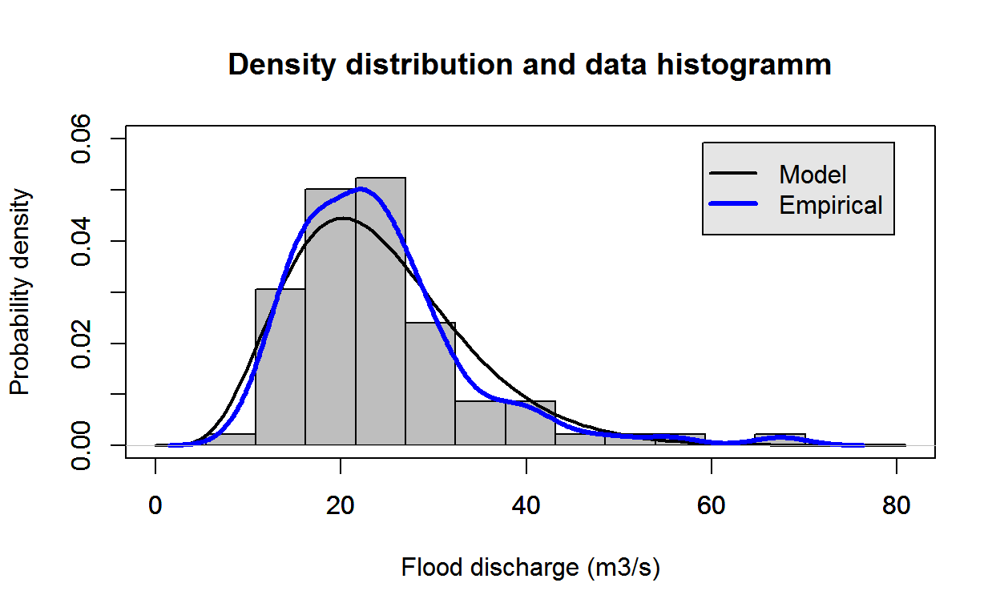
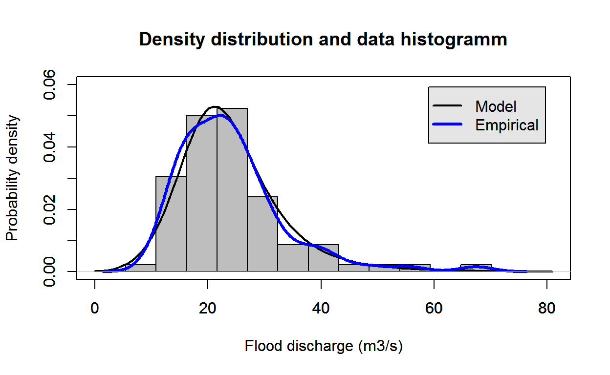
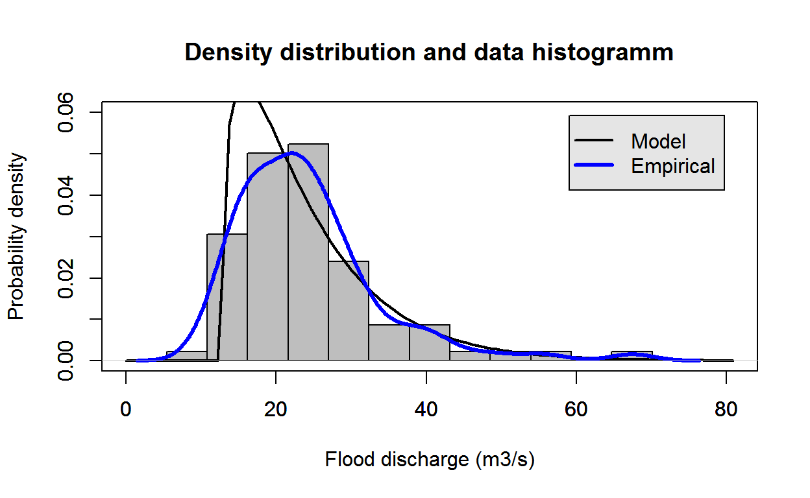

Authors: Florian Kobierska Baffie [aut, cre]
Version: 0.1
License: MIT
This package was developed for the FlomKart project. It contains functions to fit probability distributions to flood data. The following distributions are implemented: - Generalized extreme value (gev) - Generalized logistics (gl) - Gumbel (gumbel) - Gamma (gamma) - Pearson III (pearson) Four parameter estimation methods are available: - Maximum likelihood (mle) - Linear moments (Lmom) - Ordinary moments (mom) - Bayesian inference (bayes) All functions are named distr_method (i.e. gl_bayes)
evd, ismev, pracma, nsRFA, MASS, fitdistrplus, plyr
testthat, packagedocs
Function to fit the gamma distribution with bayes method This is a dummy function because this method has not been implemented yet
gamma_bayes(dat)
Function to fit the gamma distribution with the linear moment method
gamma_Lmom(dat)
library(FlomKart)
estimate = gamma_Lmom(test_data)
plot_density(test_data, param = estimate, distr = "gamma")
Function to fit the gamma distribution with the maximum likelihood method
gamma_mle(dat)
library(FlomKart)
estimate = gamma_mle(test_data)
plot_density(test_data, param = estimate, distr = "gamma")Function to fit the gamma distribution with the ordinary moments method
gamma_mom(dat)
library(FlomKart)
estimate = gamma_mom(test_data)
plot_density(test_data, param = estimate, distr = "gamma")Function to calculate the posterior predictive distribution after calling gev_bayes
get_posterior_gev(mmrp, mupars, spars, kpars)
Function to calculate the posterior predictive distribution after calling gev_bayes
get_posterior_gl(mmrp, mupars, spars, kpars)
Function to calculate the posterior predictive distribution after calling gumbel_bayes
get_posterior_gumbel(mmrp, mupars, spars)
Function to calculate the posterior predictive distribution after calling pearson_bayes
get_posterior_PEARSON(mmrp, mupars, spars, kpars)
Function to fit the GEV distribution with BayesianMCMC method WE assume that the shape parameter only has a prior with mean zero and standard deviation 0.2 (dnorm(x[3], 0, 0.2))
gev_bayes(dat)
library(FlomKart)
estimate = gev_bayes(test_data)
plot_density(test_data, param = estimate, distr = "gev")Function to fit the GEV distribution with the linear moment method
gev_Lmom(dat)
library(FlomKart)
estimate = gev_Lmom(test_data)
plot_density(test_data, param = estimate, distr = "gev")Function to fit the GEV distribution with the maximum likelihood method
gev_mle(dat)
library(FlomKart)
estimate = gev_mle(test_data)
plot_density(test_data, param = estimate, distr = "gev")Function to fit the GEV distribution with the ordinary moments method
gev_mom(dat)
library(FlomKart)
estimate = gev_mom(test_data)
plot_density(test_data, param = estimate, distr = "gev")Function to fit the Generalized Logistics distribution with BayesianMCMC method We assume that the shape parameter only has a prior with mean zero and standard deviation 0.2 (dnorm(x[3], 0, 0.2))
gl_bayes(dat)
library(FlomKart)
estimate = gl_bayes(test_data)
plot_density(test_data, param = estimate, distr = "gl")## Warning in log(1 - k * (x - xi)/alfa): NaNs producedFunction to fit the Generalized Logistics distribution with the linear moments method
gl_Lmom(dat)
library(FlomKart)
estimate = gl_Lmom(test_data)
plot_density(test_data, param = estimate, distr = "gl")## Warning in log(1 - k * (x - xi)/alfa): NaNs producedFunction to fit the GL distribution with the maximum likelihood method. This function was copied from Kolbjorn’s initial file
gl_mle(xdat, ydat = NULL, mul = NULL, sigl = NULL, shl = NULL, mulink = identity, siglink = identity, shlink = identity, muinit = NULL, siginit = NULL, shinit = NULL, show = TRUE, method = "Nelder-Mead", maxit = 10000, ...)
library(FlomKart)
estimate = gl_mle(test_data)
plot_density(test_data, param = estimate, distr = "gl")## Warning in log(1 - k * (x - xi)/alfa): NaNs producedFunction to fit the Generalized Logistics distribution with the ordinary moments method
gl_mom(dat)
library(FlomKart)
estimate = gl_mom(test_data)
plot_density(test_data, param = estimate, distr = "gl")
Function to fit the Gumbel distribution with BayesianMCMC method We do not provide a prior for the BayesianMCMC function
gumbel_bayes(dat)
library(FlomKart)
estimate = gumbel_bayes(test_data)
plot_density(test_data, param = estimate, distr = "gumbel")Function to fit the Gumbel distribution with the linear moment method
gumbel_Lmom(dat)
library(FlomKart)
estimate = gumbel_Lmom(test_data)
plot_density(test_data, param = estimate, distr = "gumbel")Function to fit the Gumbel distribution with the maximum likelihood method
gumbel_mle(dat)
library(FlomKart)
estimate = gumbel_mle(test_data)
plot_density(test_data, param = estimate, distr = "gumbel")Function to fit the Gumbel distribution with the ordinary moments method
gumbel_mom(dat)
library(FlomKart)
estimate = gumbel_mom(test_data)
plot_density(test_data, param = estimate, distr = "gumbel")Function to fit the pearson distribution with BayesianMCMC method WE assume that the shape parameter only has a prior with mean zero and standard deviation 0.2 (dnorm(x[3], 0, 0.2))
pearson_bayes(dat)
library(FlomKart)
estimate = pearson_bayes(test_data)
plot_density(test_data, param = estimate, distr = "pearson")Function to fit the pearson distribution with the linear moment method
pearson_Lmom(dat)
library(FlomKart)
estimate = pearson_Lmom(test_data)
plot_density(test_data, param = estimate, distr = "pearson")Function to fit the pearson distribution with the maximum likelihood method
pearson_mle(dat)
library(FlomKart)
estimate = pearson_mle(test_data)
plot_density(test_data, param = estimate, distr = "pearson")Function to fit the pearson distribution with the ordinary moments method
pearson_mom(dat)
library(FlomKart)
estimate = pearson_mom(test_data)
plot_density(test_data, param = estimate, distr = "pearson")